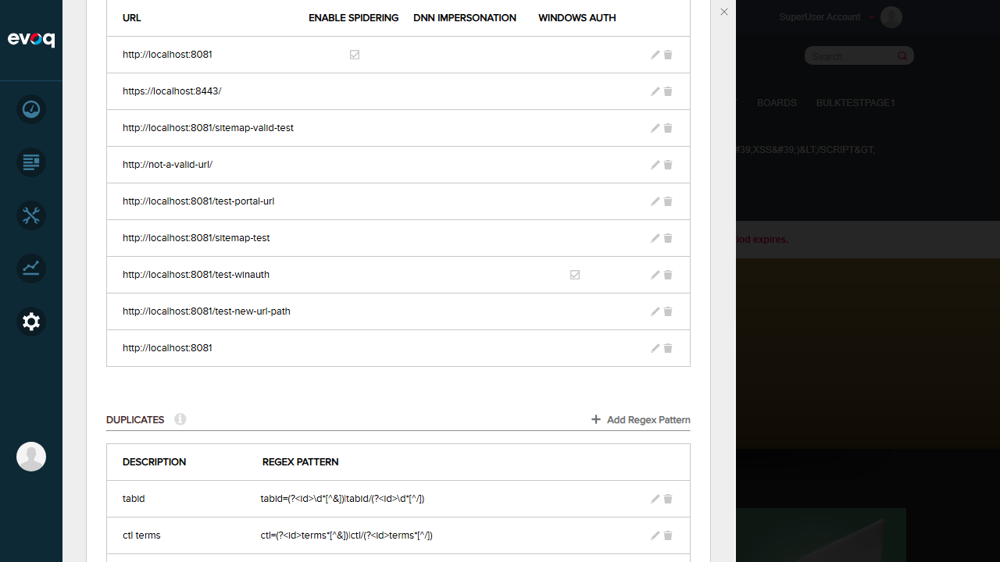
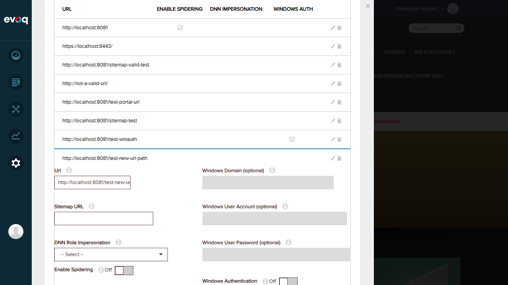
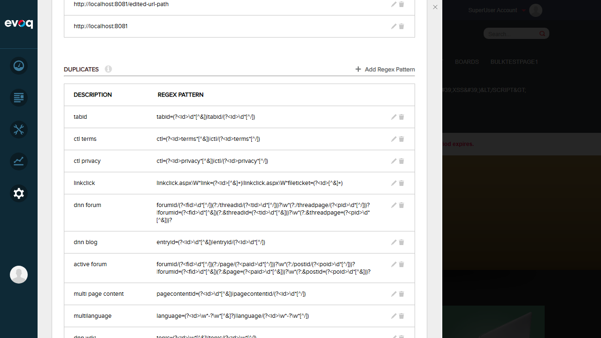
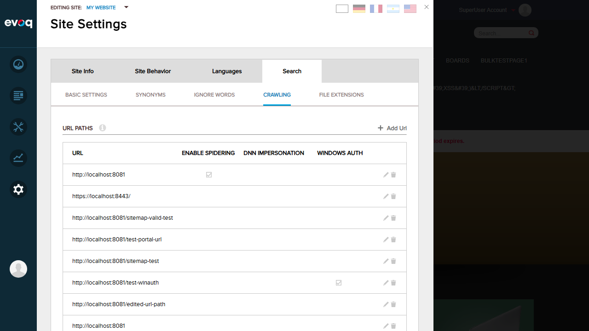
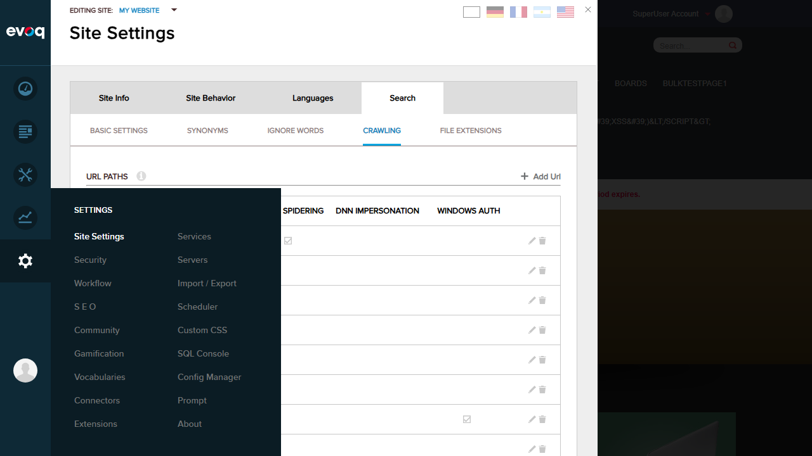

Test Report: Search Crawling URL Path Management
Extension: Evoq.PersonaBar.SiteSettings (PersonaBar Module)
Feature: Search Crawling URL Path Management
Priority: Top (Exhaustive Testing)
UI Location: Admin > Settings > Site Settings > Search > Crawling > URL Paths
Test Date: January 6, 2026
Tester: Automated Testing with Claude Code
Test Summary
| Test Scenario | Status |
|---|---|
| Add new URL path with valid URL | PASS |
| Empty URL validation | PASS |
| Duplicate URL validation | FAIL |
| Edit existing URL path details | PASS |
| Enable/disable URL path active status (Enable Spidering) | PASS |
| Configure Windows Authentication | PASS |
| Configure DNN Role-based authentication | PASS |
| Add/validate Sitemap URL | PASS |
| Delete URL path | PASS |
Overall: 8 PASS, 1 FAIL
Detailed Test Results
Test 1: Add New URL Path with Valid URL PASS
Description: Verify that a new URL path can be added with a valid URL.
- Navigate to Site Settings > Search > Crawling > URL Paths
- Click "Add Url" button
- Enter a valid URL: http://localhost:8081/test-new-url-path
- Click Save
- Verify the URL appears in the list
Result: PASS - The new URL path was successfully added and appeared in the list.
Test 2: Empty URL Validation PASS
Description: Verify that the system validates against empty URL input.
- Click "Add Url" button
- Leave URL field empty
- Click Save
- Verify validation error is displayed
Result: PASS - The system displays a red border and error icon when attempting to save an empty URL.
Note: The URL validation in the code (validationHelpers.js) only checks for non-empty strings. The regex pattern for more sophisticated URL validation is commented out.
Test 3: Duplicate URL Validation FAIL
Description: Verify that the system prevents adding duplicate URL paths.
- Add a URL that already exists in the list (e.g., http://localhost:8081)
- Click Save
- Verify system shows a duplicate error message
Result: FAIL - The system allows adding duplicate URLs without any validation error. Two entries of "http://localhost:8081" were visible in the list.
Test 4: Edit Existing URL Path Details PASS
Description: Verify that existing URL paths can be edited.
- Click the edit icon (pencil) on an existing URL path
- Modify the URL field from "http://localhost:8081/test-new-url-path" to "http://localhost:8081/edited-url-path"
- Click Save
- Verify the changes are persisted
Result: PASS - The URL was successfully updated and the new value is displayed in the list.
 Test 5: Enable/Disable URL Path Active Status (Enable Spidering) PASS
Description: Verify that the Enable Spidering toggle can be toggled on/off.
- Click edit on a URL path
- Toggle the "Enable Spidering" switch
- Verify the toggle state changes
- Save changes and verify checkmark appears in the Enable Spidering column
Result: PASS - The Enable Spidering toggle is functional. URLs with spidering enabled show a checkmark in the "Enable Spidering" column (visible for http://localhost:8081 in the list).
Test 6: Configure Windows Authentication PASS
Description: Verify that Windows authentication can be configured for URL paths.
- Click edit on a URL path
- Toggle "Windows Authentication" to On
- Fill in Windows Domain, User Account, and Password fields (when enabled)
- Verify the Windows Auth fields become enabled when toggle is On
Result: PASS - The Windows Authentication configuration UI is functional. The URL "http://localhost:8081/test-winauth" shows a checkmark in the Windows Auth column, indicating it has Windows Auth enabled. The edit form correctly shows Windows Domain, User Account, and Password fields that become enabled when the Windows Authentication toggle is On.
Test 7: Configure DNN Role-based Authentication PASS
Description: Verify that DNN role-based authentication can be configured.
- Click edit on a URL path
- Locate the "DNN Role Impersonation" dropdown
- Verify roles are available for selection
Result: PASS - The DNN Role Impersonation dropdown is present in the edit form. It shows "-- Select --" by default and loads portal roles for selection.
Test 8: Add/Validate Sitemap URL PASS
Description: Verify that sitemap URLs can be configured for URL paths.
- Click edit on a URL path
- Locate the "Sitemap URL" field
- Verify the field is editable
Result: PASS - The Sitemap URL field is present in the edit form and is editable.
Test 9: Delete URL Path PASS
Description: Verify that URL paths can be deleted.
- Click the delete icon (trash) on "http://not-a-valid-url/"
- Verify a confirmation dialog appears
- Click "Yes" to confirm deletion
- Verify the URL is removed from the list
Result: PASS - The delete confirmation dialog appeared with the message "Are you sure you want to delete http://not-a-valid-url/?". After confirming, the URL was successfully removed from the list.

Observations
- Code Finding: The URL validation in validationHelpers.js only checks for non-empty strings. A more sophisticated URL regex pattern exists in the code but is commented out. This explains why non-URL formats like "http://not-a-valid-url/" are accepted.
- UI Behavior: The edit form shows all configuration options including Enable Spidering, DNN Role Impersonation, Sitemap URL, Windows Authentication, and Windows credential fields.
- Windows Auth Fields: The Windows Domain, User Account, and Password fields are disabled by default and become enabled when the Windows Authentication toggle is turned On.
- Password Storage: The code references encrypted password storage (CrawlerUrlDetailDto includes urlWinPassword field).
- Delete Confirmation: The system properly prompts for confirmation before deleting URL paths, which is good UX practice.
Issues Found
Severity: Medium
Description: The system allows adding duplicate URL paths without any validation or error message. This could lead to redundant crawling operations and data inconsistency.
Expected: System should check for existing URLs and display an error message when attempting to add a duplicate.
Actual: Duplicate URLs are accepted and added to the list without any warning.
Conclusion
The Search Crawling URL Path Management feature is largely functional with 8 out of 9 test scenarios passing. The core CRUD operations (Create, Read, Update, Delete) work correctly. The main issue identified is the lack of duplicate URL validation, which should be addressed to prevent potential crawling inconsistencies.
Overall Test Result: 89% Pass Rate (8/9 tests passed)